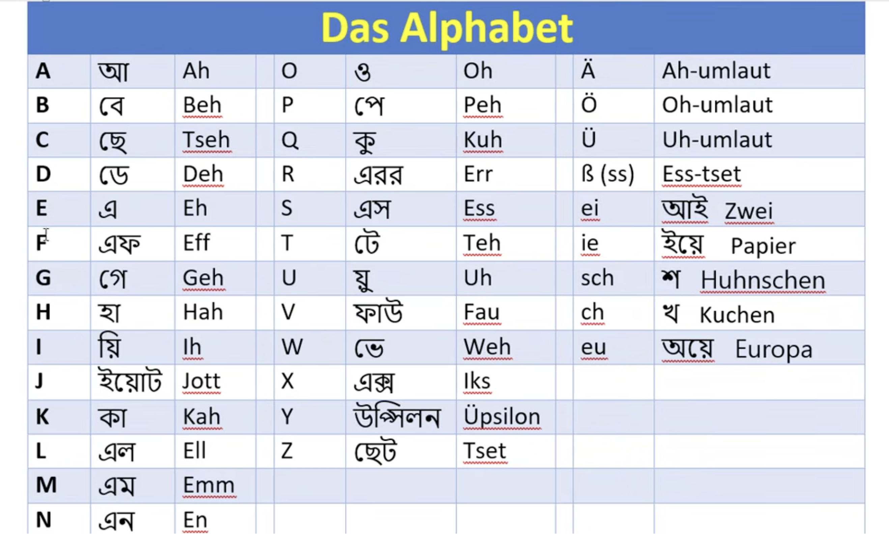
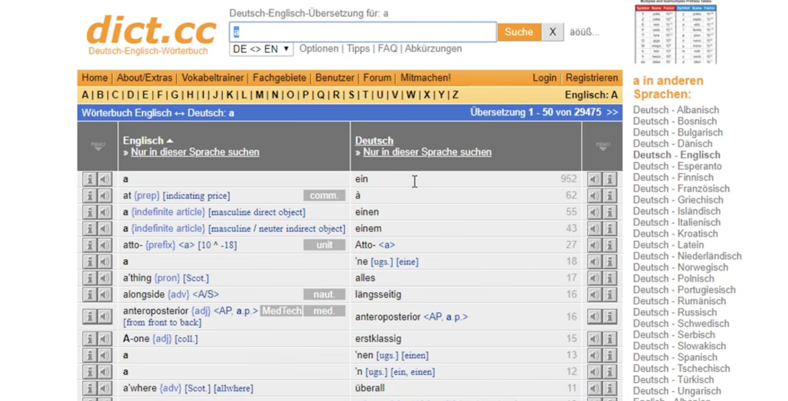
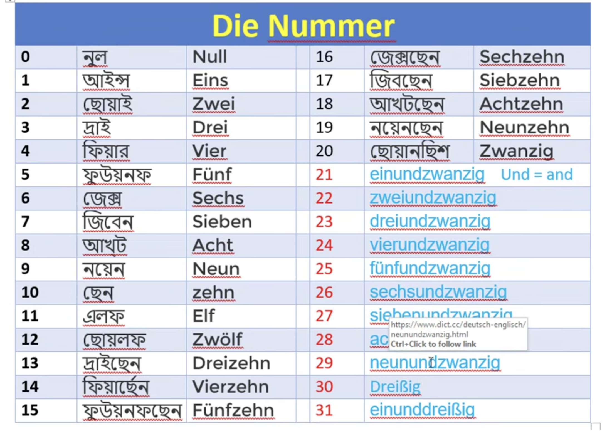
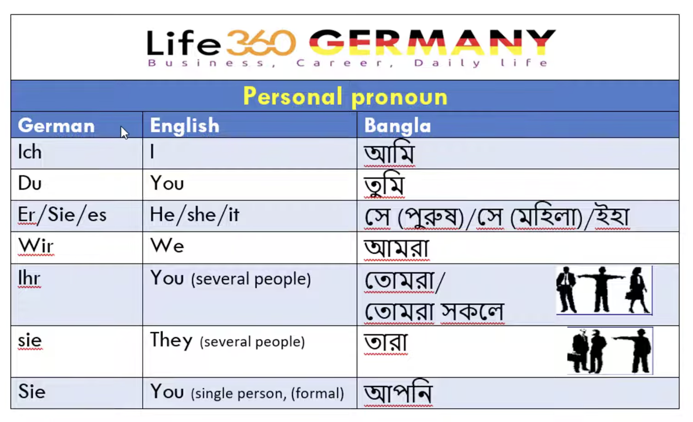

I'm learning German (Deutsch) and using this page as a living notebook - every screenshot, table, or note I collect goes here so I can review it from my phone, laptop, or anywhere else without digging through folders. It will keep growing over time.
Links & Resources
Books, channels, and other resources I'm using to learn German — a few links per row to keep it compact.
Das Alphabet
The German alphabet, with a rough Bangla/English phonetic guide for each letter.

Letters A-Z
| Letter | Bangla | Sounds like |
|---|---|---|
| A | আ | Ah |
| B | বে | Beh |
| C | ছে | Tseh |
| D | ডে | Deh |
| E | এ | Eh |
| F | এফ | Eff |
| G | গে | Geh |
| H | হা | Hah |
| I | য়ি | Ih |
| J | ইয়োট | Jott |
| K | কা | Kah |
| L | এল | Ell |
| M | এম | Emm |
| N | এন | En |
| O | ও | Oh |
| P | পে | Peh |
| Q | কু | Kuh |
| R | এরর | Err |
| S | এস | Ess |
| T | টে | Teh |
| U | য়ু | Uh |
| V | ফাউ | Fau |
| W | ভে | Weh |
| X | এক্স | Iks |
| Y | উপ্সিলন | Üpsilon |
| Z | ছেট | Tset |
best link: https://learngerman.dw.com/en/beginners/s-62078399
Umlauts & special letters
| Letter | Sounds like |
|---|---|
| Ä | Ah-umlaut |
| Ö | Oh-umlaut |
| Ü | Uh-umlaut |
| ß (ss) | Ess-tset |
Common sound combinations
| Combo | Bangla | Example word |
|---|---|---|
| ei | আই | Zwei |
| ie | ইয়ে | Papier |
| sch | শ | Hühnchen |
| ch | খ | Kuchen |
| eu | অয়ে | Europa |
Pronunciation Dictionary
Using dict.cc - a free German–English dictionary - to look up word meanings and pronunciation whenever I hit a new word.

Die Nummer (Numbers)
Numbers 0–31. From 21 onward, German builds numbers as "unit + und (and) + ten", e.g. einundzwanzig = one-and-twenty = 21.

| # | German | # | German |
|---|---|---|---|
| 0 | Null | 16 | Sechzehn |
| 1 | Eins | 17 | Siebzehn |
| 2 | Zwei | 18 | Achtzehn |
| 3 | Drei | 19 | Neunzehn |
| 4 | Vier | 20 | Zwanzig |
| 5 | Fünf | 21 | Einundzwanzig |
| 6 | Sechs | 22 | Zweiundzwanzig |
| 7 | Sieben | 23 | Dreiundzwanzig |
| 8 | Acht | 24 | Vierundzwanzig |
| 9 | Neun | 25 | Fünfundzwanzig |
| 10 | Zehn | 26 | Sechsundzwanzig |
| 11 | Elf | 27 | Siebenundzwanzig |
| 12 | Zwölf | 28 | Achtundzwanzig |
| 13 | Dreizehn | 29 | Neunundzwanzig |
| 14 | Vierzehn | 30 | Dreißig |
| 15 | Fünfzehn | 31 | Einunddreißig |
Personal Pronouns

| German | English | Bangla |
|---|---|---|
| Ich | I | আমি |
| Du | You (informal, singular) | তুমি |
| Er / Sie / es | He / She / It | সে (পুরুষ) / সে (মহিলা) / ইহা |
| Wir | We | আমরা |
| Ihr | You (several people) | তোমরা / তোমরা সকলে |
| sie | They (several people) | তারা |
| Sie | You (single person, formal) | আপনি |